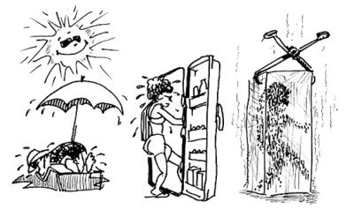

更年期障害 climacteric disturbance
こうねんきしょうがい
更年期障害の症状
こうねんきしょうがいのしょうじょう
いらいら irritability
気分のむら Mood swing きぶんのむら
ふらふらする Dizziness
忘れっぽい Forgetfulness わすれっぽい
動悸 Palpitation どうき
不眠 Sleeplessness ふみん
冷汗 Cold sweats ひやあせ
寝汗 Night sweats ねあせ
カッと熱くなる Hot flashes カッとあつくなる
I have been experiencing hot flashes lately.
My feet are cold.
I get irritated easily.
I can't concentrate on my work.
My mother went through a difficult menopause.
Will I be the same way?
このところ、カッと顔がほてります。
それなのに足先が冷えます。
ちょっとしたことでイライラします。
仕事に集中できません。
私の母は更年期障害がひどかったのですが、私もそうでしょうか？
このところ、カッとかおがほてります。
それなのに あしさきがひえます。
ちょっとしたことでイライラします。
しごとにしゅうちゅうできません。
わたしのははは こうねんきしょうがいがひどかったのですが、
わたしもそうでしょうか？

climacteric disturbance 更年期障害 こうねんきしょうがい
menopausal syndrome 閉経期症候群 へいけいきしょうこうぐん
The other day, talks among friends turned to the subject that a woman’s body begins to change after 40 years old. What is climacteric disturbance? If we are equipped with background information, we may be spared from over-anxiety. I’d like to know the general symptoms and what I should anticipate.
先日、友人間では４０歳を過ぎると身体の変調が始まるという話題がでました。更年期障害とはどういうものでしょうか？ 予備知識があれば、いたずらに心配し過ぎるということもありません。一般的な症状と心構えを教えてください。
In the last 10 years, as hormonal studies have made remarkable advances in biosynthesis, metabolism and specific receptors, the understanding of female hormones has also advanced. Estrogen, which is a hormone secreted from the ovary, governs more than 300 female functions. At least two estrogen receptors, ER-a and ER-b, have been identified and found in the genitourinary, cardiovascular, gastrointestinal tracts and in the brain, bone and integument. Around age 40 when the secretion of estrogen becomes irregular, these organs are affected and manifest menopausal symptoms. When symptoms are so severe that daily activities are hindered, it is called climacteric disturbance.
Treatment includes supplementing estrogen (hormone replacement therapy). However, the therapy is controversial, because of side effects, and needs close observation by a physician.
最近１０年間のホルモン研究は、生合成、代謝ならびに受容体などに関してめざましい発展を遂げましたが、女性ホルモンについても理解が進んでいます。卵巣から分泌されるホルモンであるエストロゼンは、３００以上の女性の身体機能をつかさどりますが、現在までにエストロゲンの受容体ER-aと ER-bの2種が同定されています。すなわち、受容体の存在は、その場でエストロゲンが働くことを意味しますが、生殖器、心臓血管系、消化器系、脳、骨に存在が認められています。このエストロゼンの分泌が不順になる４０歳当たりから上記の器官はその影響を受け、更年期症状としてあらわれます。病状が日常生活に支障をきたすほどに重症であれば更年期障害と呼ばれます。
治療としてはエストロゲンを補うホルモン療法 （hormone replacement therapy）がありますが、副作用の問題もあり議論がわかれており、医者の適切な指示に従わなければなりません。
【My two cents】
Every woman experiences climacteric disturbance sooner or later (between 45 and 55 years old). Frank talks among friends may help reduce psychological load. Now that women live up to 80 years or so, the postmenopausal life is much longer than before. It can be the start of a new life.
【一言おせっかい】
更年期障害は個人差があれ、遅かれ早かれ（４５歳から５５歳の間）女性は、誰でも経験します。友人間で、率直に話し合うことも、精神的負担を取り除く点でお薦めします。今や、平均年齢８０歳の時代です。閉経後の人生も、昔の時代に比べると、ずいぶん長くなりました。新しい出発と考えて有意義に過ごすようにしましょう。
[ko02]
| © 1995-2013 NACOS International Institute. All Rights Reserved. |